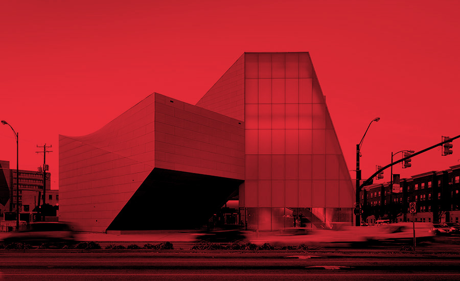

ARCHITECTURE




Olympics is to sports, as WDR – World Design Rankings – is to design. The annual global ranking aims to provide additional data and insights to economists, journalists and design-enthusiasts regarding the state-of-the-art in the design industry. The ultimate aim of WDR is to contribute to the global design culture by advocating and highlighting good design.